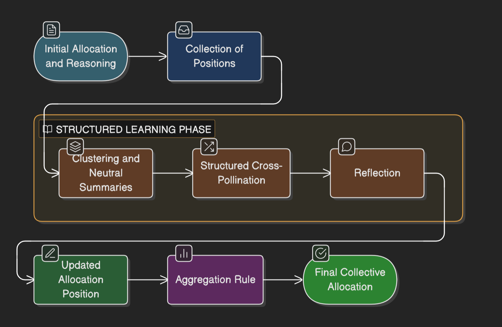
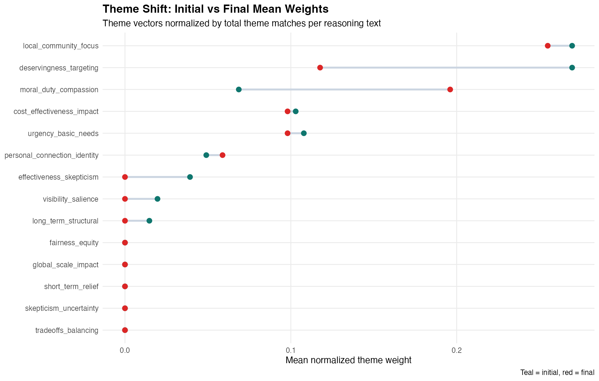
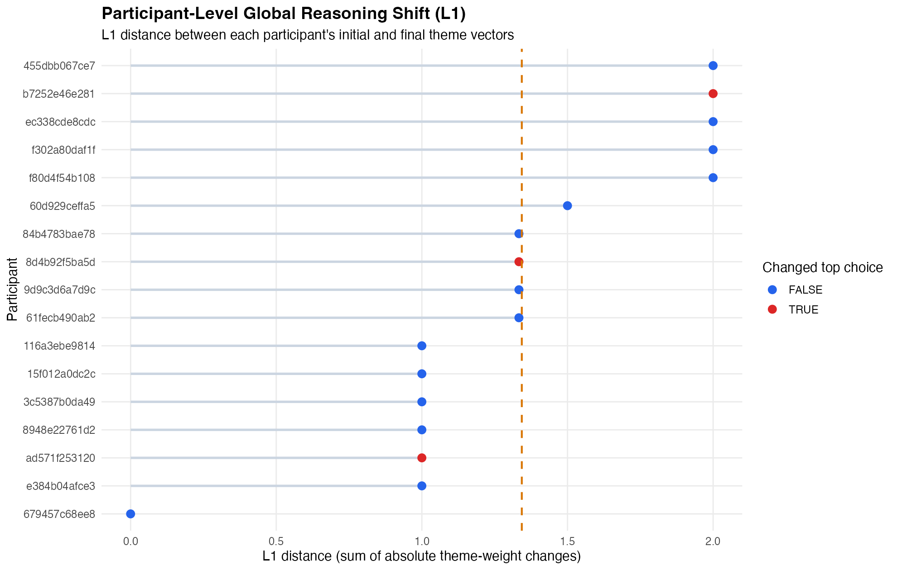
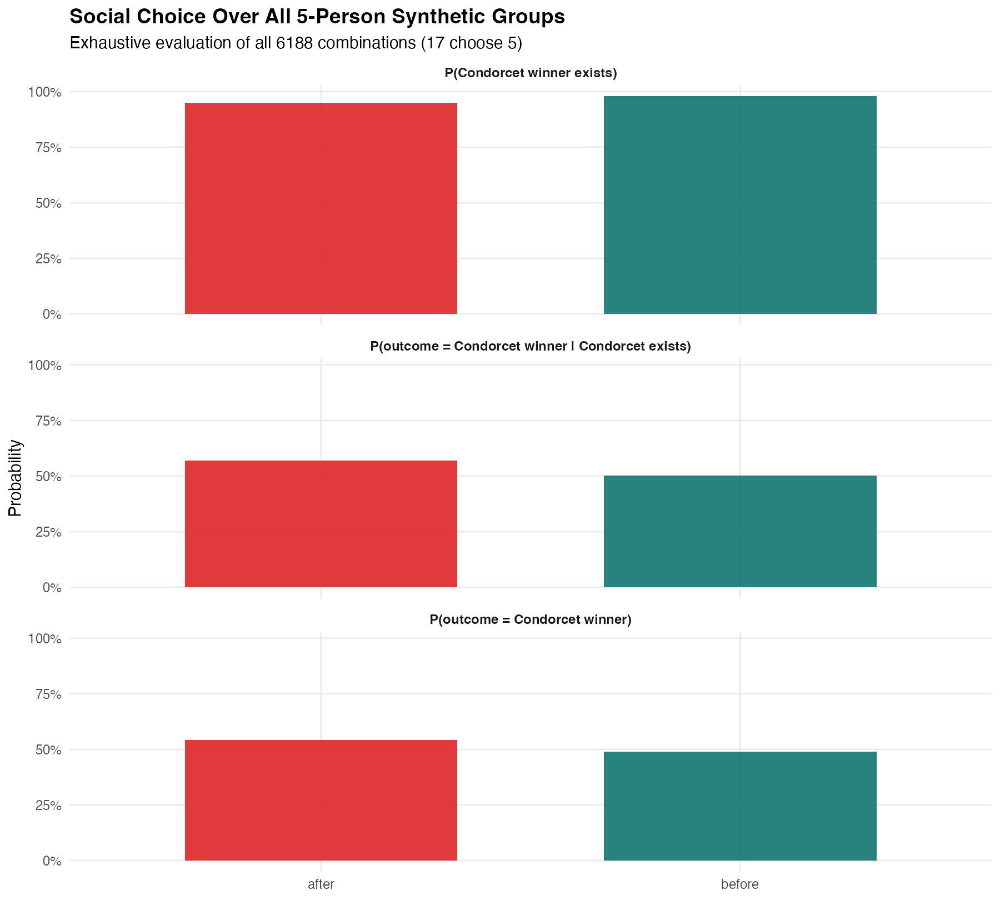
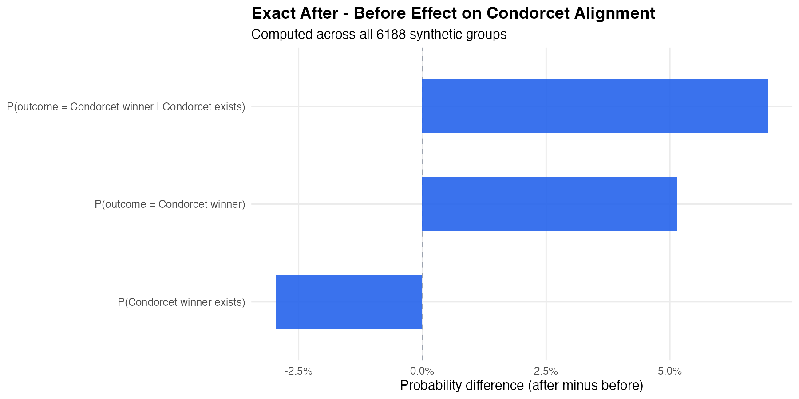
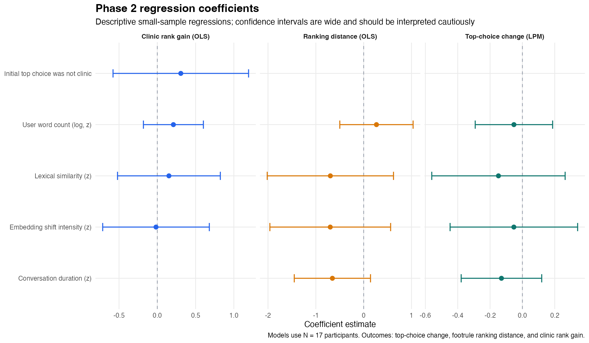

Study overview
How exposure to others' reasoning changed donation preferences
This dashboard presents results from a two-phase collective choice exercise in which participants ranked four community interventions, then some participants revised their rankings after reviewing summarized reasoning from others.
About this study
Participants were asked to rank four possible recipients of a donation: a food pantry, a health clinic, an urban tree initiative, and an animal rescue shelter. In Phase 1, participants made their choices independently. In Phase 2, participants first submitted an initial ranking, then reviewed short summaries of how other participants were reasoning about the same trade-offs, and finally submitted a final ranking. This dashboard shows what changed after that exposure: which option won, whether participants reordered their rankings or changed the reasons they gave.

Pilot note: This is a pilot with N = 17 participants, so results are not generalizable and are primarily illustrative. Additional sessions are needed for stronger inference.
How to read this dashboard
The results are organized around three levels of change:
Collective outcome: how voting and ranking were updated.
Condorcet-efficiency: voting rule comparisons and whether aggregated outcomes were more aligned with the Condorcet winner.
Reasoning change: whether people revised the arguments behind their choices. Participant Top-Choice Outcomes zooms in on individual-level movement.
Charity options at a glance
Community Animal Rescue Shelter
A nonprofit animal rescue organization that takes in abandoned or neglected dogs and cats in New York City. The shelter provides food, medical care, behavioral support, and temporary housing while working to find permanent adoptive homes. Donations help cover veterinary treatment, shelter operations, and adoption programs that give homeless animals a chance to live in safe, long-term homes.
Website: Animal HavenCommunity Food Pantry Network
A nonprofit organization that helps address food insecurity in New York City by collecting surplus food from restaurants, farms, and grocery stores and delivering it to food pantries, soup kitchens, and community programs. Donations support food distribution, transportation, and partnerships with local organizations that provide meals and groceries to families experiencing hunger.
Website: City HarvestUrban Tree Initiative
A nonprofit that works with communities across New York City to plant and care for street trees and other urban green spaces. The organization trains volunteers and local residents to maintain trees, organizes planting projects, and promotes stewardship of the city’s urban forest. Donations help fund tree planting, maintenance programs, and environmental education for residents and youth.
Website: Trees New YorkCommunity Health Clinic
A local student-run, physician-supervised, free clinic that provides care to uninsured adults in its neighborhood. Their services are confidential and provided at no cost. The clinic serves more than 300 patients annually, with more than 1,000 visits across six medical specialties: OB/GYN; ophthalmology; physical medicine and rehabilitation/podiatry; liver/gastrointestinal; mental health; and cardiology.
Website: East Harlem Health Outreach PartnershipHow this process works
Phase 1
Share your view
Participants rank all four options and provide short reasoning for their top choice.
Between phases
Ideas are collected
Reasoning is anonymized and neutrally rephrased to create short, attribution-free summaries.
Phase 2
Hear others' thinking
Participants review summarized peer reasoning, then submit final rankings and final rationale.
Outcome
Collective picture
We compare initial and final rankings and reasoning to measure preference movement and reframing.
Results at a glance
In phase 2 a minority changed their winner, a larger group edited the ranking, and almost everyone revised the argument they used to justify that ranking (that said, the measure of change in the argument is preliminary and perhaps too blunt, and needs a supplement).
10 participants stayed fully put, while cross-pollination produced three outright first-place switches.
5 made a limited reorder and 2 made a larger reshuffle across the four options.
1 kept the same theme set, 2 changed one theme, and 14 changed two or more themes.
Deep dive
Collective outcome: how votes and rankings were updated
Community Health Clinic gained the most from cross-pollination, while Community Food Pantry lost its initial edge. Urban Tree Initiative also picked up support, mostly as an upward ranking move rather than a broad first-place takeover.
| option | initial top votes | final top votes | net top-vote change | participants moving it up |
|---|---|---|---|---|
| Community Animal Rescue Shelter | 4 | 3 | -1 | 0 |
| Community Food Pantry Network | 6 | 4 | -2 | 0 |
| Urban Tree Initiative | 2 | 3 | 1 | 3 |
| Community Health Clinic | 5 | 7 | 2 | 4 |


Voting rule comparison
Only rules that are justified by ranked ballots are treated as primary results. Approval-style rules are excluded because the study captures rankings, not direct approvals.
In phase 1, there's a lot of instability due to the tiny number of participants. We're more interested in phase 2: initially, community food pantry wins across the board, but in the final submission there's some variability with health clinic mostly prevailing.
| rule | phase1 | phase2_initial | phase2_final |
|---|---|---|---|
| plurality | Urban Tree Initiative | Community Food Pantry Network | Community Health Clinic |
| borda | Community Food Pantry Network | Community Food Pantry Network | Community Food Pantry Network |
| instant_runoff | Urban Tree Initiative | Community Food Pantry Network | Community Health Clinic |
| condorcet | n/a | Community Food Pantry Network | Community Health Clinic |
| copeland | Community Food Pantry Network | Community Food Pantry Network | Community Health Clinic |
| anti_plurality | Community Food Pantry Network | Community Food Pantry Network | Community Food Pantry Network |
Reasoning movement
We also zoom in on within-participant shifts in rationales. This technical view is now supporting evidence rather than the headline. The lollipop chart shows each participant's own embedding distance after cross-pollination, compared against the average distance between two different participants' initial reasonings.

We estimate within-participant movement across popular explanatory themes: urgency, cost-effectiveness, equity, long-term effects, short-term relief, local focus, global focus, personal connection and identity, moral duty, trade-offs, uncertainty, ineffectiveness, deservingness, and salience.
| theme pattern | direction | reading |
|---|---|---|
| Deservingness targeting | down | Largest average decline after cross-pollination. |
| Moral duty compassion | up | Largest average increase in final rationales. |
| Local community focus | slight down | Still common, but less dominant in final text. |
| Skepticism about effectiveness | slight down | Disappeared from the final text. |

Theme-level mean weight before vs after for each rationale theme.

Participant-level L1 movement in theme composition.
Social choice robustness (exhaustive subgroups)
Across all 6,188 unique 5-person groups, plurality outcomes become modestly more aligned with the Condorcet winner after cross-pollination when a Condorcet winner exists, even as Condorcet existence itself drops slightly.
| estimand | after - before | interpretation |
|---|---|---|
| P(outcome = Condorcet winner | Condorcet exists) | +0.0698 | Plurality is more likely to pick the Condorcet winner when one exists. |
| P(outcome = Condorcet winner) | +0.0514 | Net gain in Condorcet-consistent outcomes overall. |
| P(Condorcet winner exists) | -0.0296 | Slightly fewer subgroups exhibit a Condorcet winner. |

Before/after probabilities for Condorcet-related outcomes.

Estimated effect sizes (after minus before) across subgroup metrics.
Exploratory predictors
These regressions are descriptive only (N = 17; 3 top-choice changers). Coefficients are standardized for comparability, and the chart should be read as correlational.

No predictor is statistically decisive at this sample size; duration shows the strongest directional association for ranking distance.
Participant top-choice outcomes
Participants who changed top choice
| participant | top choice before | top choice after | wording shift | themes in initial | themes in final | theme moves |
|---|---|---|---|---|---|---|
| b7252e46e281 | Community Food Pantry Network | Urban Tree Initiative | Large rewrite | Deservingness targeting, Local community focus, Urgency basic needs | Cost effectiveness impact | 4 |
| ad571f253120 | Community Food Pantry Network | Community Health Clinic | Noticeable rewrite | Cost effectiveness impact, Local community focus | Local community focus | 1 |
| 8d4b92f5ba5d | Community Animal Rescue Shelter | Community Health Clinic | Noticeable rewrite | Deservingness targeting, Local community focus, Moral duty compassion | Local community focus | 2 |
Stable top-choice participants can still show substantial reasoning movement even when the headline preference remains the same.
Stable participants
| participant | top choice before | top choice after | wording shift | themes in initial | themes in final | theme moves |
|---|---|---|---|---|---|---|
| f80d4f54b108 | Community Health Clinic | Community Health Clinic | Large rewrite | Deservingness targeting, Effectiveness skepticism, Local community focus | Moral duty compassion | 4 |
| 3c5387b0da49 | Community Health Clinic | Community Health Clinic | Large rewrite | Deservingness targeting, Local community focus | Deservingness targeting, Moral duty compassion | 2 |
| 15f012a0dc2c | Urban Tree Initiative | Urban Tree Initiative | Large rewrite | Cost effectiveness impact | None | 1 |
| 84b4783bae78 | Community Food Pantry Network | Community Food Pantry Network | Large rewrite | Deservingness targeting, Local community focus, Urgency basic needs | Deservingness targeting | 2 |
| 455dbb067ce7 | Community Food Pantry Network | Community Food Pantry Network | Noticeable rewrite | Deservingness targeting | Personal connection identity | 2 |
| 679457c68ee8 | Urban Tree Initiative | Urban Tree Initiative | Noticeable rewrite | None | None | 0 |
| 8948e22761d2 | Community Health Clinic | Community Health Clinic | Noticeable rewrite | Deservingness targeting, Local community focus, Moral duty compassion, Urgency basic needs | Cost effectiveness impact, Local community focus, Urgency basic needs | 3 |
| 60d929ceffa5 | Community Food Pantry Network | Community Food Pantry Network | Noticeable rewrite | Deservingness targeting, Local community focus, Long term structural, Urgency basic needs | Urgency basic needs | 3 |